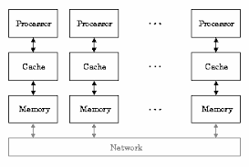
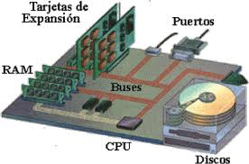
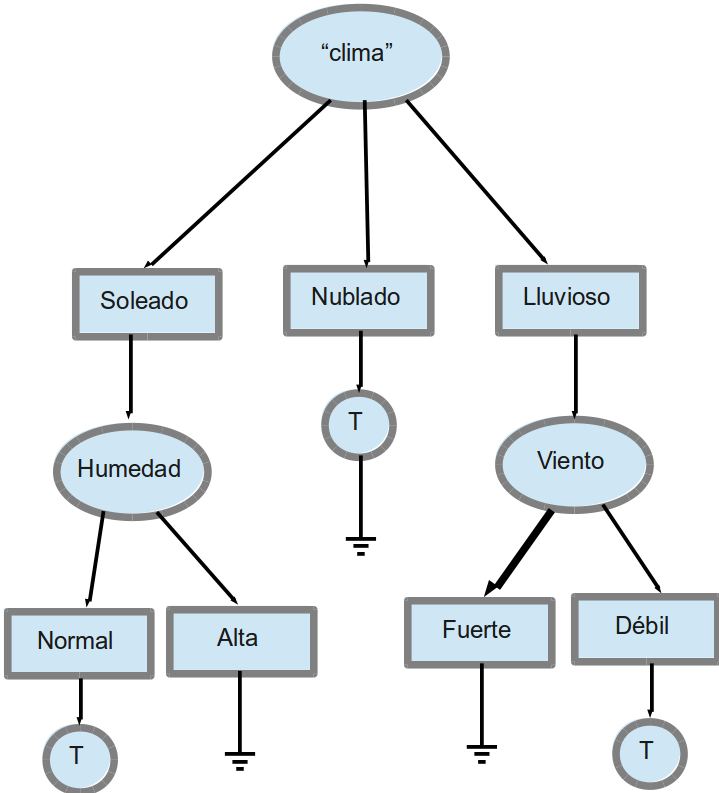
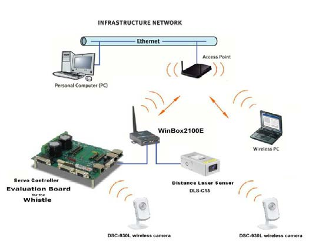
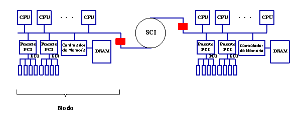

4.3.1 Sistemas de memoria compartida
En este tipo de sistemas, múltiples procesadores comparten una única memoria principal. Todos los núcleos pueden acceder a las mismas direcciones de memoria, lo que permite una comunicación rápida entre procesos. Son ideales para aplicaciones que requieren un alto grado de colaboración entre tareas.
Este modelo requiere mecanismos de sincronización como semáforos o exclusión mutua (mutex) para evitar conflictos cuando varios procesadores intentan acceder o modificar los mismos datos simultáneamente.
Ventajas
- Comunicación rápida entre procesadores.
- Facilidad de programación en comparación con memoria distribuida.
- No requiere paso de mensajes explícitos.
Desventajas
- Escalabilidad limitada debido a la contención de acceso a la memoria.
- Riesgo de condiciones de carrera si no se maneja adecuadamente la sincronización.
Ejemplo
Un servidor con varios núcleos de CPU que ejecuta múltiples hilos de una misma aplicación, donde todos acceden a una base de datos en memoria RAM compartida.
4.3.2 Sistemas de memoria distribuida
A diferencia de los sistemas de memoria compartida, en este modelo cada procesador tiene su propia memoria local. Para que los procesadores intercambien datos, deben hacerlo a través de mecanismos de comunicación como el paso de mensajes (message passing).
Este tipo de sistemas es común en arquitecturas de clústeres y supercomputadoras donde los nodos están conectados por redes de alta velocidad. Su escalabilidad es mayor, ya que al distribuir la memoria se reduce la contención por el acceso a datos.
Ventajas
- Alta escalabilidad, ideal para sistemas masivos.
- No hay contención directa por acceso a memoria.
- Se adapta bien a entornos distribuidos como la nube.
Desventajas
- Complejidad en la programación y sincronización.
- Mayor latencia en la comunicación entre nodos.
- Requiere protocolos de paso de mensajes.
Ejemplo
Un sistema de cómputo en clúster, donde cada servidor tiene su propio sistema operativo y memoria, y colabora con otros mediante tecnologías como MPI (Message Passing Interface).
4.3.3 Memoria distribuida compartida
Este modelo híbrido combina elementos de los sistemas de memoria compartida y distribuida. En él, los procesadores pueden tener memoria local (como en el modelo distribuido), pero el sistema está diseñado para que toda la memoria sea accesible globalmente mediante mecanismos de coherencia y virtualización.
De esta forma, se logra que los procesos se comuniquen eficientemente sin necesidad de gestionar explícitamente el paso de mensajes, simulando un espacio de memoria compartida global, aunque físicamente esté distribuida.

Ventajas
- Combina lo mejor de ambos modelos: escalabilidad y facilidad de programación.
- El sistema puede distribuir dinámicamente los recursos de memoria.
- Reduce el tiempo de espera por contención directa.
Desventajas
- Mayor complejidad en diseño del sistema operativo y la arquitectura.
- Requiere mecanismos de coherencia de caché y sincronización más complejos.
Ejemplo
Arquitecturas como NUMA (Non-Uniform Memory Access) donde los procesadores acceden a regiones de memoria con distinta latencia dependiendo de su cercanía física. Se utiliza en servidores multiprocesador modernos.
